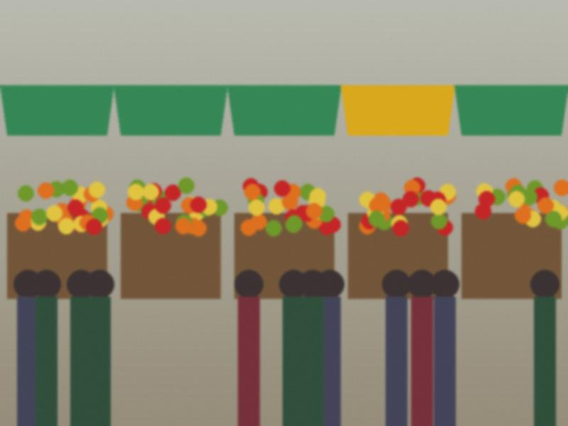
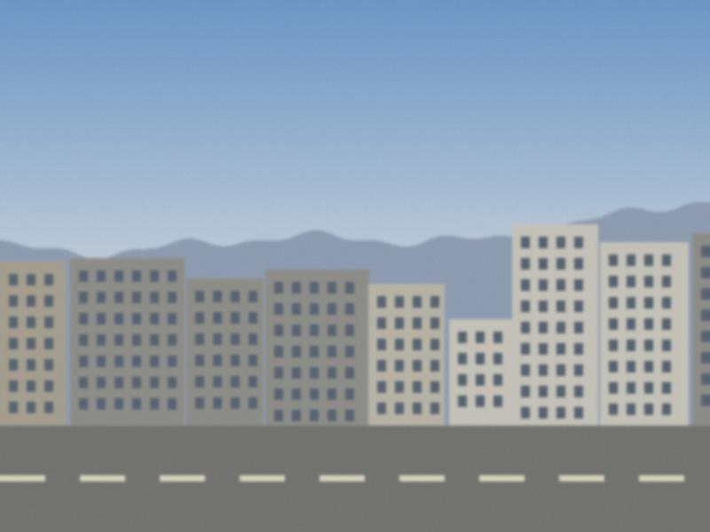

Archive for the ‘Parish’ Category
A short letter on the news that the whole hill has been waiting for.
Dn. Denha · 11 Oct 2026 · Issue 302 min read
Cathedral Hill in the evening light, the scaffolding not yet up.
After the autumn Council the rector read the announcement after Ramsha: from Easter 2027 the north quarter of the dome will be retiled, tile by tile, by the village kiln and the old masons. Scaffolding, a fence around the north door, the services moved to the south door for the summer. The parish will be asked for what it can give, and one tile will be signed by every child of the parish who asks to.
Also, in November the reading of the names will be longer: sixty-one more were found in the returned registers. Bring a coat. Bring a candle. Bring the children, so they hear.
The first new tiles for the dome, fired in a village kiln below the Chatkal.
Dn. Denha · 17 May 2026 · Issue 282 min read
 One of the first new tiles on the sacristy table, next to the rector's glasses.
One of the first new tiles on the sacristy table, next to the rector's glasses.My father's brother runs a kiln in a village two days' walk from where I was born. The cathedral asked the old potter if he could make tiles to match the dome: ribbed, turquoise, the same glaze. The first dozen came up the hill in a cart this week, wrapped in straw. They are almost the right colour. Almost is the problem.
The rector held one up to the dome and squinted for a long time. "It needs another year in the sun," he said. "Like all of us."
I had expected a longer speech.
Dn. Denha · 08 Jun 2025 · Issue 252 min read
The Council met after Easter, and the Archbishop saw the deacons of my year in the sacristy, one by one. I expected the priesthood to be set for this summer. He said: "Denha, you read well. You are not ready. Stay at the book another year, and walk more in the lanes." That was the whole talk, two minutes.
It stung for a day. Then I saw that he was right: I have been in the church and in the classroom, and the lanes I know are only the ones between them. So next year, God willing. For now I carry the Gospel and the incense.
A small question from a visitor, and what the sacristan answered.
Dn. Denha · 30 Jun 2024 · Issue 222 min read
A visitor from Talas asked the sacristan why the sanctuary lamps are brass and not silver. He said silver was taken in 1937, and when the church was returned, the people brought what they had. A brass kettle, a samovar tap, a pair of candlesticks from a kolkhoz club. They melted them together. The lamps are heavy and slightly crooked, and each has a small round dent where a child once knocked it with a spoon.
"We keep them," he said, "because we know what they are made of."
A practical letter for the first week of the Fast.
Dn. Denha · 18 Feb 2024 · Issue 212 min read

A Savma board at a stall on the bazaar street.Lentils, walnuts, dried apricots, short-grain rice, pumpkin, beans, sunflower oil. The market stalls on the bazaar street put up the Savma boards the week before: a handwritten list of everything that is allowed. A good seller will also tell you which of his customers are cheating.
At the seminary table: bean soup, rice with apricots, a slice of bread, tea. A first-year asked if tea counts as food. The rector said "Only if you are very hungry."
Bell, courtyard, a long list.
Dn. Denha · 14 Nov 2023 · Issue 202 min read
This year the reading took forty minutes. The parish stood with candles; the students stood with their hands in their sleeves. After, the Archbishop spoke in the courtyard and said only that the names are the Church's own affair and a family's, and that we should say them carefully and in our own voices.
Autumn has been a time of careful voices, I think. The parish felt it. Nobody said what they felt. That is a kind of liturgy too.
Men with ladders and clipboards came up the hill this week.
Dn. Denha · 12 Mar 2023 · Issue 172 min read

The dome from the lane, with the chalk numbers on the north side.The turquoise dome is old, put up in 1903–07, and some of its tiles are looking tired. A survey: two engineers from Talas and one man from the Heritage people, climbing slowly in the cold, tapping tile by tile with a little wooden hammer, listening for the hollow ones. They say there are more than four hundred on the north side alone. Each has a number in chalk.
The rector looks at the chalk and says: "God counts them already, but fine."
A short letter about Aibek-ata, who sold milk on the hill for forty years.
Dn. Denha · 12 Jun 2022 · Issue 132 min read
Aibek-ata died on Tuesday, at eighty-three. His family wanted the old way: the body in the house for the night, the neighbours with food, the procession to the old cemetery on the north slope, singing the whole way. Fr. Gewargis led and I carried the cross and walked backwards for a little, as the deacon does at the door.
At the grave a boy of about eight stepped forward and put a small bottle of milk on the earth. Nobody said anything. We all knew whose milk it was.
A practical letter: how the incense behaves at minus eighteen.
Dn. Denha · 30 Jan 2022 · Issue 112 min read
It does not behave. The coals die in the thurible, the arsha, the juniper, will not smoke, the chain freezes to my glove. Last Sunday I swung an empty thurible down the whole nave, very seriously, because nobody had told me it was out. The choir director saw and said nothing, which is how I knew it was bad.
Now I keep a small stove behind the screen and a pair of thin cloth gloves for the chain. A deacon learns by being cold.
Every year on 14 November the great bell tolls for the clergy and the people taken in 1937.
Dn. Denha · 14 Nov 2021 · Issue 102 min read
In the courtyard the whole parish stood in the cold, and the names were read one by one, priest after priest, in Iradi and in Syriac. A girl from our parish, perhaps five, asked her mother in a loud whisper whether those people were sleeping. I told her yes, and that God knows their names even where the earth has forgotten.
I do not know if I should have said it. The mother thanked me. The bell was still going when we went in for tea.
The Season of the Apostles takes the church out of the church.
Dn. Denha · 27 Jun 2021 · Issue 82 min read
In the Season of the Apostles we walk. On the Sunday after the feast the parish goes in a line down the hill to the river with the cross, singing, and comes back by the other lane, so everyone has seen everyone's gate. Old women watch from the benches and tell the young ones their sins out loud. In this church the neighbours are the first confessors.
I carried the cross for one lane and my arms still hurt. Do not tell the rector I said so.
The unleavened bread of our liturgy is simpler than people think and harder than it looks.
Dn. Denha · 09 May 2021 · Issue 72 min read
 Kümöch from the Saturday bake, still on the hot stone.
Kümöch from the Saturday bake, still on the hot stone.The kümöch is made by the women's guild every Saturday in the cathedral kitchen. Fine wheat flour, water, a little salt, nothing else, rolled thin and pressed with the old wooden seal that has the cross and the lotus. Baked fast, on the hot stone. If it rises, it is thrown to the birds.
The old rule says the baker must be fasting and silent while it bakes. This is the hardest part for the guild.
A short list, for the people who ask.
Dn. Denha · 14 Mar 2021 · Issue 52 min read
- 7:00 Qurbana: I light the candles, read the Gospel, call out the prayers.
- 9:00 – 12:00 lessons at the seminary: Syriac, canon law, pastoral care. My hands smell of ink.
- 14:00 visits to the sick, with Fr. Gewargis or alone with the book.
- 18:00 Ramsha, the evening prayer. I carry the incense.
- After: homework.
Nobody has told me what a "free evening" is.
A new deacon starts a blog because the seminary told him to write down what he learns.
Dn. Denha · 06 Dec 2020 · Issue 12 min read
Fr. Ishak, who is rector of the seminary, said in the first term: "Write it down, or you will remember only how it felt." So here is the notebook, open to everybody. I am twenty-five and I have been a deacon for two weeks.
What I know after two weeks: the stole sits on the left shoulder and tries to fall off. The Gospel book is heavier than it looks. Your knees will tell you about the liturgy long before your mind does.